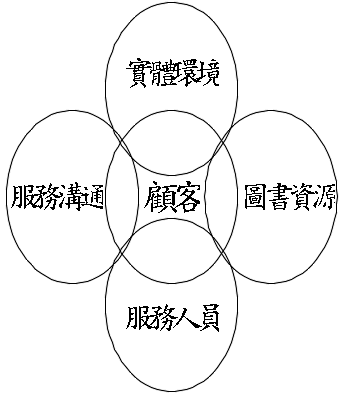
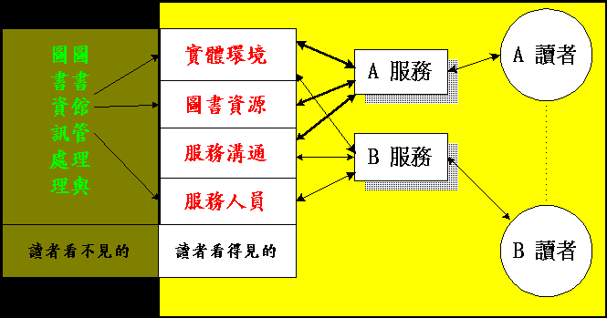
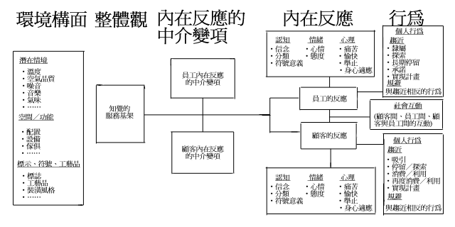

大學圖書館 第一卷第四期（86.10）
從服務接觸談圖書館之服務環境管理
謝寶煖 Pao-nuan Hsieh
國立台灣大學圖書館學系副教授
[摘 要]
實體環境對顧客的行為和顧客滿意的影響，已經廣為服務管理者所重視。本文旨在介紹實體環境對顧客和員工行為的影響，探討實體證據，或稱之為服務基架，對外部行銷目標和內部組織目標的達成可以產生的助益。最後檢視服務業的研究成果，提出服務基架在圖書館管理和研究上的意涵。
[Abstract]
The impact of service providers’ physical evidence (environments) on customer behavior and satisfaction has recently gained the attention of some services marketers. The primary purpose of this paper is to explore the impact of physical evidence on the behaviors of both customers and employees, and to illustrate the ability of the physical evidence, particularly the servicescape, to facilitate achievement of organizational as well as marketing goals. By reviewing the researches conducted in service industries, the author highlights key managerial and research implications.
關
鍵 詞：服務接觸；服務環境；實體證據；服務基架；服務證據Keywords: Service encounter; Service environment; Physical evidence; Servicescape;
Service evidence
一、前
言顧客出現在服務過程中，扮演服務參與者的角色，已經廣為服務管理者和服務設施設計者所重視，很多服務管理者且將顧客當做共同生產者
(co-producer)，甚至視顧客為半個員工(partial employee)。由於顧客出現在服務現場，服務管理者必須特別注意服務環境對顧客的影響。對顧客而言，服務的消費利用，實際上是對服務環境的一種經驗，所以服務組織的內部裝潢、傢俱設備、空間配置、聲音和色彩等，都會影響顧客對服務的整體感受。所以，以服務接觸(service encounter)為焦點，分析顧客與服務環境的互動過程，了解顧客如何從服務環境中蒐尋有形的線索，以評價服務，遂成為服務管理的重要課題。多年來圖書館界不時倡議提昇服務形象，到底服務形象是什麼呢
?所謂服務形象，指的是服務提供者所提供的服務，以及服務提供過程中，顧客所感受到、所看到的，或是所聽到的印象、認知或看法的綜合體(註1)。因此，凡是圖書館在提供服務的過程中，讀者所能看到、感受到以及體會到的所有事件、景象及事物，都涵蓋在服務形象之中，諸如辦公室或工作場所的佈置與整潔，服務台的擺設，圖書資源的配置與排列，服務人員的服裝儀容、態度、應對技巧，以及抱怨處理方式，服務提供的流程，服務提供的時間、等候時間、回應的時間，以及對讀者的尊重與重視的程度等，都包含在內。然而服務形象是來自於讀者的親身體驗，讀者對於服務的感受，是在與圖書館接觸的瞬間所形成的。因此，真正的服務形象提昇，應該是以實際的服務接觸為重心，來思索服務品質改善之道。服務接觸是指顧客與服務機構直接互動的過程
(註2)。也就是顧客與服務傳遞系統(service delivery system)的互動，包括服務人員、實體設施以及其他有形的因素(註3)。在服務行銷和組織行為的教科書中，對於服務接觸和服務環境都有相當篇幅的介紹，企業界對環境氣氛、設施設計和建築裝潢等環境因素，對消費者和員工的影響，都相當的重視，積極利用環境管理來激勵員工，設計服務環境來吸引顧客。但是在圖書館學的領域中，有關服務環境管理的議題尚未受到廣泛的關注和研究討論。因此，本文的目的在整理服務管理、服務行銷以及環境心理學等相關領域中，有關服務環境的研究，了解服務環境管理的重要構面，探討其與圖書館的關係，希望能發揮拋磚引玉的效果。
二、服務接觸與服務證據
服務的最大特性就是顧客參與服務的提供過程，而且有很多的服務是由顧客來啟始，依賴顧客的全程參與，服務才能存在。所以服務是一種過程，一種表現；顧客就是以其服務接觸的滿意程度來評價服務的優劣。
然而服務是無形的，沒有一個唯一的實體產品可供顧客做為品質評價的依據，所以顧客是經由服務接觸所感知的實體證據
(physical evidence)，來做為評價的依據。所謂的實體證據或稱服務證據(service evidence)是指服務提供以及服務組織與顧客互動所處的環境，Bitner稱之為服務基架(servicescape)(註4)；同時也包括所有有助於服務表現和服務溝通的有形產品。(註5)所以，圖書館的服務證據應該包括所有的有形表徵，如圖書館建築、內外部的規劃設計、傢俱設備、內外部的標示、服務說明、館刊館訊、以及各項宣傳品，甚至圖書館專用的信封信紙、館徽等。這些服務證據都是重要的服務品質指標，尤其是當顧客無法判斷真正服務的品質時，就會倚賴這些線索做為評價的依據。也正因為服務是無形的，所以顧客通常傾向於尋求有形的線索或實體證據，來做消費利用前的參考，以及消費利用時和消費利用後滿意評估的主要依據。因此，實體證據可以為圖書館提供絕佳的機會，藉以宣示圖書館的目標、願景(vision)，將有關市場區隔策略和服務承諾等訊息，傳達給讀者，以達到服務行銷的目的和圖書館的績效目標，所以行銷學者視實體證據為服務行銷組合的七要素之一(註6)。首先先讓我們來檢視一下，當讀者利用圖書館的服務時，是與那些服務證據接觸，有那些服務證據可以幫助讀者更了解我們所提供的服務，更成功地利用我們所提供的服務，來滿足其資訊需求。筆者認為圖書館的服務證據可以分為實體環境、圖書資源、服務人員和服務溝通四大項。實體環境是指讀者利用圖書館服務時所處的環境，包括館舍和設施、設備等。圖書資源則包括印刷和非印刷的各種媒體型式的資源。服務人員係指在圖書館提供服務的所有人員，包括專業的館員，技術人員，半專業或非專業的支援人員，以及臨時的工讀生。服務溝通則是指圖書館用以傳遞服務相關訊息的所有文字說明，包括宣傳海報、單張傳單、服務說明、機器設備的操作手冊、利用教育的教材等。然而，這些服務證據對讀者的認知並不是互斥獨立的，而是彼此相關的，如圖一所示。

圖一：圖書館的服務證據
接下來，再讓我們來看一下，圖書館的服務系統是如何與顧客接觸的。每一個服務系統都可以分成兩部份，一部份是顧客看得見的，另一部份是顧客看不見的。由圖二的圖書館服務系統示意圖可知，圖書館的管理和圖書資訊處理部份是讀者所看不見的，當讀者利用圖書館的各項服務時，是經由讀者看得見的實體環境、圖書資源、服務溝通和服務人員四項服務證據，來感知圖書館的服務，當讀者利用不同的服務時，其所接觸的服務證據可能不同，讀者接觸各項服務證據的感受或者是滿意程度，就形成其對圖書館服務的認知，而這項認知就會經由
A讀者傳達給B讀者，成為B讀者服務利用前，建立服務期望的參考。因此，圖書館可以善加運用這四項服務證據，改善圖書館的服務品質，塑造圖書館的服務形象。本文僅就實體環境略加介紹，了解實體環境對建立讀者服務經驗的重要性，並探討圖書館可以怎樣研擬服務環境管理策略，來提高讀者對服務品質的認知與對圖書館服務的滿意度。
圖二：圖書館服務系統示意圖
三、服務環境的內涵
要了解服務環境對顧客的影響，首先必須了服務環境是由哪些重要構面所組成的。
Kotler認為服務環境應該涵蓋視、聽、嗅、觸等四項知覺可以感知的相關環境因素：(1)視覺知覺，如顏色、亮度、大小、形狀等；(2)聽覺知覺，如音量、音調；(3)嗅覺知覺，如氣味、新鮮度；(4)觸覺知覺，如軟硬、平滑、溫度；並以atmospherics來統稱(註7)。Booms和Bitner認為有形線索(tangible clues)應包括建築、燈光、溫度、傢俱、配置和色彩(註8)。雖然服務行銷學者對實體服務環境的組成要素，各有不同看法與分類，由學者們所描述的服務環境的組成要素可知，服務環境應該涵括服務提供所需的所有實體設備，如外部建築、內部建築與裝潢、和氣溫、燈光等氣氛狀況。實體環境會影響人的行為，這是眾所週知的。環境心理學就是一門研究人類行為及其經驗與社會實體環境之交互關係的學科
(註9)。環境心理學家Mehrabian和Russell將個人對於環境的行為反應，區分為趨近(approach)和規避(avoidance)兩大類。趨近行為係針對某一特定環境的所有正向行為，例如想要在該環境中停留(stay)、遊歷探索(explore)、工作或者是加入成為其中的一份子。而規避行為則恰好相反，是針對某一特定環境的所有負向行為，例如不想在該環境中停留、遊歷探索、工作、或者是不願意成為其中的一份子。(註10)Baker
根據環境心理學的研究，將服務環境構面區分為三大類(參見表一)，並說明各類構面對顧客行為的影響(註11)。第一類為潛在因素(Ambient factors)，係指能夠影響潛意識的背景情境，例如空調、溫度、照明、聲音、氣味、乾淨等，都是可以影響顧客行為，願意停留或者再度光臨利用的環境因素。潛在因素是穩定的環境特質，顧客通常不會立即察覺到或意識到。雖然我們通常未曾察覺潛在環境的存在，但是潛在環境卻對我們的心情、工作表現，甚至生理健康都有深遠的影響(註12)。讀者期望圖書館提供一定水準的潛在環境，所以只有當圖書館無法提供這些潛在環境，或令讀者處於不愉快的狀態時，才會引起讀者的注意。因為潛在環境通常被視為理所當然，所以潛在環境對行為的影響是中性或是負面的；換句話說，當讀者察覺到潛在環境時，讀者會採取規避行為(avoidance behavior)，而非趨近行為(approach behavior)。例如當讀者察覺到圖書館的燈光不夠明亮後，會減少到圖書館的次數。第二類為設計因素
(design factors)，是指對顧客較為明顯的視覺刺激，例如內外部的建築、色彩、材質、配置和標示等，是存在於知覺最前端的刺激。所以，設計因素有較強的潛力可以塑造顧客的正向知覺，和鼓勵顧客的趨近行為。設計因素包括美感和功能兩部分，美感如建築、色彩等；功能則指配置、舒適性等。設計因素可以同時應用在外部和內部的服務設施上。第三類為社會因素
(social factors)，是指服務環境中的「人」，包括在服務環境中的其他顧客(註13)和服務人員，他們的外表、行為和人數，都會影響顧客對服務機構的認知。顧客因素對於必須共用服務設施的服務機構，是一項重要的環境因素。顧客人數對個別顧客的服務經驗會有正向或負向的影響。例如圖書館的流通服務台前大排長龍，會對讀者的借閱行為產生負面影響，讀者可能不喜歡排隊等待而打消借書的念頭。相反的，參加圖書館利用教育的讀者人數，則會對讀者的參與行為產生正面的影響，會提高其參與意願和學習興趣。表一：實體環境要素
| 潛在因素 |
存在於立即知覺之外的背景狀況 |
．溫度
|
|
設計因素 |
存在於知覺最前端的刺激 |
|
|
社會因素 |
存在環境中的人 |
．人數 ．外表 ．行為 |
資料來源： |
||
Bitner
認為實體環境可以幫助或者是阻礙內部組織目標的達成和外部行銷目標的實現。而且實體環境管理對服務機構更為重要，因為顧客和員工都要經驗服務機構的服務設施。然而，實體環境在不同的服務業和服務機構所扮演的角色並不相同，在規劃和設計服務基架時所可運用的策略也不盡相同。Bitner以服務基架管理的差異性，提出表二的服務機構分類架構，來說明實體環境對內部組織溝通與外部服務行銷的影響。(註14)基本上，表二中同一格內的各服務機構所面臨的服務環境規劃與設計的問題，大體上是類似的。垂直象限是指在服務基架中是由“誰”來執行活動，是顧客，是員工，還是顧客與員工兩者間的互動。所以，垂直象限的兩極，一端是「自助式服務」機構
(self-service organization)，主要是由顧客來執行活動，即使有員工介入，其比重也是相當的低。另一端則是「遠距服務」(remote service)，顧客幾乎是沒有涉入服務基架之中，即使有涉入也是被動地執行少數活動，有時甚至連員工的涉入程度也很低，如完全自動化的自動語音服務。介於兩極之間的是「互動式服務」(interpersonal services)，顧客和員工必須同時出現在服務基架之中，並且同時執行活動。顧客和員工的相對涉入程度，決定服務環境的設計應該是以顧客，還是以員工的需求為主要考量。當然，在互動式的服務基架中，必須同時考慮到實體環境對於顧客間、員工間、以及顧客與員工之間，社會互動的特性和互動的品質。服務環境的設計，是否讓顧客、員工、或者是顧客和員工同時出現在服務基架中，也決定了服務機構想要透過實體環境達到的目標。在自助式服務環境�堙A創意地設計實體設施可以支援服務定位和區隔策略，也可以強化顧客滿意和達到吸引顧客等特定的行銷目標。至於遠距服務，則應以達成員工滿意、激勵和作業效率等組織目標，為實體環境設計的首要目標，因為很少有顧客會看到或是經歷遠距服務機構的實體設施。至於互動式服務，則可透過實體環境的精心設計來同時達成內部組織目標和外部行銷目標。
表二的水平象限所要描繪的是服務基架的複雜性。有些服務環境是很簡單的，包含的項目很少，空間很小，服務的方式也很有限，可以稱為「精簡環境」
(lean environments)。自動售票窗口只要利用簡單的服務設施便可以提供服務，是精簡環境的一個例子。精簡服務基架的設計可以是非常簡單的，尤其是在沒有顧客與員工互動的自助式或是遠距服務的情況。有些服務基架卻是非常的複雜，有許多項目和服務方式，是所謂「精緻的環境」(elaborate environments)，醫院就是一個例子，通常有很多樓層，很多病房，很多科別，很多精密的儀器設備，和很複雜的醫療項目。在精緻環境中，行銷目標和組織目標還是可以經由服務基架的有效管理來達成，例如，病房的設計可以讓病人感覺很舒適、很滿意，同時也可以有助於醫生和護士提高其工作效率。| 表二：以服務基架為基礎的服務機構分類架構 | ||
|
活動執行者 |
服務基架的複雜性 |
|
|
精緻的 |
精簡的 |
|
|
自助式的服務 (顧客) |
高爾夫球 |
ATM 電影院 快遞窗口 |
|
互動式的服務 (顧客與員工) |
旅館 |
乾洗店 |
|
遠距服務 (員工) |
電話公司 |
電話秘書 |
|
資料來源： |
||
圖書館所提供的各項服務，事實上也可以
Bitner的服務基架分類架構來加以區分。以大學圖書館所提供的服務為例，自修和閱報是屬於精簡的自助式服務，因為這兩項服務的主要活動是由讀者所執行的，館方涉入的程度相當的低，所需的服務設施也都較為簡單，所以服務環境管理應該以讀者的需求為主要考量，如利用之方便性、舒適性等。此外，很多的讀者也經常到圖書館來瀏覽現期期刊或是直接到書架上翻閱有興趣的期刊，瀏覽和複印文件可以算是精緻的自助式服務。因為這兩項服務雖也是由讀者所主導，但是需要館方較多的配合，如新穎切合需求的館藏，正確整齊的書架安排，醒目的標示系統，操作簡易的複印設備等，都是重要的實體環境管理構面，而且都應該從讀者的角度來設計安排。至於館藏流通、指定參考書、以及館際複印
/互借服務，則應該歸為精簡的互動式服務。因為讀者在利用這些服務時，與服務人員都有若干程度的互動，但是互動時所交換的資訊是制式，互動的程序具有相當程度的標準化，所以實體環境的規劃設計應該同時考慮到讀者和服務人員的互動需求。參考諮詢服務，無庸置疑的是精緻的互動式服務，因為其互動過程是非標準化的，所需的服務基架是較為複雜、動態的，所以服務環境的管理應該有助於讀者與參考館員間的互動，贏得讀者的信賴，又能充份輔助參考館員發揮專業績效。最後，新知通告、公用目錄查詢和網路資源查詢是屬於遠距服務，新知通告經常是以電子郵件方式傳送，所以是屬於精簡的服務，而公用目錄查詢和網路資源查詢則是屬於精緻的服務。因為讀者不需要到圖書館就可以利用這些服務，所以，應以服務人員的需求為服務環境設計與管理的焦點，可以善用潛在環境因素來提高服務人員的生產力，達成組織績效。
| 表三：以服務基架為基礎的圖書館服務分類 | ||
|
活動執行者 |
服務基架的複雜性 |
|
|
精緻的 |
精簡的 |
|
|
自助式的服務 (顧客) |
瀏覽 |
自修 |
|
互動式的服務 (顧客與員工) |
參考服務 |
流通服務 |
|
遠距服務 (員工) |
公用目錄 |
新知通告 |
Zeithaml
和Bitner認為服務組織可以用來強化顧客和服務人員的行為的重要實體環境構面(也就是服務基架)有三大類(註15)。第一類為潛在環境，包括環境的背景特性，如溫度、燈光、噪音、音樂、氣味和顏色，都會對人的感覺、思考和特定服務情境的反應，產生顯著的影響。由於員工在服務環境中停留的時間通常都比顧客來得長，所以潛在環境對員工的影響遠甚於顧客。當潛在環境與顧客或員工的期望相悖時，潛在環境對行為的影響將更為強烈。例如一個讀者進到圖書館的門口大廳，看到的是一幅吵雜的畫面，讀者可能會轉身離開。第二類是服務環境的空間配置與功能性
(functionality)。服務環境的存在通常是為了實現顧客的特定目的或需求，實體環境的空間配置和功能性，就顯得異常的重要。空間配置係指機器、設備和傢俱的配置、規格和型式、及其空間關係。功能性則是指機器、設備和傢俱能夠幫助顧客和員工執行任務和達成目的的能力。服務環境的空間配置和功能性，對於必須獨立執行任務的自助式服務，尤其重要，因為顧客無法倚賴服務人員的協助來完成其任務。因此，圖書館的公用目錄、複印設備、陳列圖書和期刊的設備等的機能性，都是讀者成功地、滿意地利用圖書館的關鍵。第三類服務環境構面是標示、符號和裝飾品
(artifacts)。顧客對服務組織的認知，很多時候是得自於實體環境中的各項顯性或隱性的符號表徵。建築物內外的標示是顯性的溝通體，可以用來標示組織或部門的名稱，也可以用來導引方向，更可以用來傳達行為規範(如禁止抽煙)。其他符號和裝飾品的溝通性則較標示為低，僅能提供顧客隱性的線索，主要用來傳達行為規範和對行為的期望。然標示、符號和裝飾品，對塑造顧客的第一印象和傳達服務理念，確實扮演關鍵性的角色。所以，圖書館可以利用標示、符號和裝飾品來做服務定位和服務區隔。
四、服務環境對行為的影響
營利性服務組織經常利用實體環境構面
(如音樂、裝潢等)，來吸引顧客上門。事實上，當顧客進門之後，更有賴優質服務環境的導引，才能幫助顧客成功地達成任務，經驗一個滿意的服務歷程(註16)。尤其是具有高度顧客參與、互動特性的服務組織，如銀行、法律事務所、醫院，甚至圖書館等，實體環境對形象、形象塑造和顧客滿意的影響更為顯著。因為服務的生產和消費是同時發生的，通常顧客是在服務組織的實體設施中，經歷全程的服務。所以，服務組織無法隱藏，事實上，是無可避免的會在顧客認知的服務經驗中發生強烈的影響。然而服務環境對顧客的影響並不侷限於服務提供過程，即使是在消費／利用之前，顧客一般也會多方打探消息來了解服務組織的能力和品質。而實體環境可以提供最豐富的線索
(註17)，也可以利用實體環境向顧客傳達服務目標，Bitner的研究便顯示，實體設施可以影響顧客對服務的最終滿意程度(註18)。有趣的是，在服務組織中與顧客互動溝通、影響顧客的實體環境，也強烈地影響組織的員工。有關組織行為的研究發現，實體環境會影響員工的滿意度、生產力和動機
(註19)。遺憾的是，以往的研究多未將顧客和員工同時納入考量，例如Milliman的實驗，觀察不同速度的音樂，對消費者行為的影響，但是在其研究中並未探討音樂速度對員工滿意和生產力的影響(註20)。因為服務的生產和消費總是同時進行的，而且通常需要服務人員的直接接待，所以，顧客和員工必須在服務組織的實體設施中，彼此互動。因此，服務組織的實體環境，應該同時支援服務人員和顧客的需要和偏好。Bitner
彙整圖三的環境與使用者關係架構，來說明顧客和員工對實體環境的內在反應和行為表現(註21)。Bitner認為服務環境的潛在情境、空間和功能、以及標示和符號等重要構面，是顧客和員工對服務環境知覺形成的主要來源；顧客和員工對服務環境的知覺，會產生認知、情緒和心理三方面的內在反應，而顧客和員工的內在反應則會影響其形於外的趨避行為。Bitner認為實體環境對行為的影響，可以從個人行為和社會互動兩方面來採討。Donova
和Rossiter以零售店的消費者為對象所進行的研究發現，消費者對環境的知覺會影響其趨近行為，如採購時的心情、再度光顧的意願、消費的金額、停留的時間等等(註22)；Milliman的研究則顯示背景音樂的速度會影響超市和飯店的顧客流量和消費金額(註23)。換句話說，服務環境不僅可以吸引或防止顧客上門，更可以左右顧客進門後能否圓滿達成任務。每個人到服務組織都有其目的或任務，實體環境就像水一樣可以載舟，也可以覆舟。就以圖書館為例，每位讀者到圖書館來都有其特定的目的，圖書館的服務設施可以幫助讀者達成目的，也可能阻礙讀者使其無法達成目的。試想當讀者踏進圖書館的大門後，接下來可能：
(1)迷惑地杵在門口，因為他找不到平面圖或指引指示，所以他不知道怎麼到他想去的地方；(2)眉頭緊蹙，因為人多吵雜或是書多擁擠，讓他定不下心或是無法舒服地瀏覽。如果是遭遇到上述情境，讀者就有可能無法達成這趟圖書館之旅的任務，至少是無法愉快地完成。所以，服務環境會直接妨礙讀者完成其任務。同樣地，服務環境也會妨礙館員執行工作的能力，使其無法圓滿達成任務。圖書館當然是希望鼓勵趨近行為，透過服務環境的規畫、設計和管理，協助讀者和館員充份發揮能力，順利圓滿地達成其既定的目的或任務；同時，圖書館也希望能夠消弭讀者和館員的規避行為。如圖三所示，讀者和館員的行為是趨近抑或是規避，決定於其對服務環境的內在反應
(包括認知的、情緒的和心理的內在反應)。基本的假定是：正向的內在反應導致趨近行為，負向的內在反應導致規避行為。|
假定一：對服務環境的正向反應，會導致趨近行為。 對服務環境的負向反應，會導致規避行為。
|
實體環境不僅會影響顧客和員工個人的行為，更會影響顧客與員工互動的方式和品質，尤其是具有高度互動特性的服務。
|
假定二：對於讀者需要與館員互動的服務，讀者/館員對服務環境的正向 內在反應，可以提高讀者間、館員間、以及讀者與館員間社 會互動的品質。相反的，對於服務環境的負向內在反應，則 會降低讀者間、館員間、以及讀者與館員間社會互動的品質。 假定三：有助於館員趨近行為的最佳設計，不見得能滿足讀者的需求， |
環境心理學家和服務行銷學者的研究，充份顯示實體環境對人的行為具有多方面的影響，所以圖書館建築的規劃設計，不僅要考慮功能，更應建立策略性目標。因此，圖書館空間規劃的第一步是擬定空間策略；換句話說，就是設定各空間中讀者和館員的期望行為，以及圖書館希望透過該空間的實體設施達成的策略目標。基於這樣的理念，館員工作空間的規劃設計，就不單單只是考量圖書資料的動線或者是部門間的關係，更要考慮圖書館希望達成的組織目標。再將圖書館希望達成的組織目標，如團隊合作
(team work)、生產力、創新，傳達給建築師，由其設計有益的實體環境，來誘發館員的行為，支援組織目標的達成。同樣的，讀者服務空間的規劃設計，除了考慮讀者動線外，更應考慮各空間的服務特性與服務基架所扮演的角色，以及圖書館希望透過該空間或服務傳達的行銷目標。例如，自助式服務只要將焦點放在讀者行為，了解讀者如何進入該服務空間，以及服務環境對讀者遊歷
(exploration)和停留的影響；至於互動式的服務，則要同時考慮服務環境對讀者、對館員、以及對讀者與館員互動的影響。所謂行銷目標，則是指圖書館想要利用服務環境來吸引讀者進入利用、滿足讀者的需求、或是留住讀者。所以，圖書閱覽室(或稱書庫)的實體環境設計，應該是以讀者的利用需求為設計焦點，使其願意長時間停留。圖三：服務環境與顧客之關係

資料來源：
五、環境適應
在了解服務環境對行為的影響之後，接下來要探討的是讀者如何認識和熟悉服務環境，也就是所謂的環境適應。適應
(Orientation)係指認識環境，以確定其與自身之關係，是一個人進入一個環境的第一項行為需求。環境適應可分為兩方面，一為方位適應(place orientation)，我現在在那�堙F二為功能適應(function orientation)，這個機構是怎麼運作的，接下來我該做什麼(註26)。當讀者初次進入一所圖書館時，必須要了解圖書館的服務功能與服務提供方式，知道目前身在何方，接下來該往何處去，該採取什麼行動。就以複印期刊文章為例，讀者首先必須知道圖書館的期刊陳列在何處，從圖書館大門口如何到達期刊區；抵達期刊區之後，必須了解期刊的陳列方式，什麼是「現刊」，什麼是「過刊」，是以那個時間點或準則來區分的，現刊和過刊的排列方式是不是一樣的，才能找到所需要的期刊文章；接下來讀者必須知道那�埵魚あL機，複印機的使用方法，是投幣式的（萬一沒有零錢，那�堨i以換零錢）？卡片式的（那�堨i以買複印卡）？還是自助式的印完再付款（是讀者自己算複印張數？還是由服務人員來算複印張數？）？然後讀者還必須知道複印機的操作方法（如何選紙張、複印份數等），以及萬一故障、夾紙或是沒紙時，可以在那�塈鋮鴘A務人員。經過這一段歷程的適應，讀者才能順利地複印到所需的期刊文章。
當讀者進入圖書館，如果能夠利用空間的提示與過去的經驗，就可以辨識自己身在何方、該往那�堥哄A以及需要做什麼。但是如果沒有空間提示或是過去沒有類似的經驗，那麼焦慮和無助的感覺就會油然而生，會降低讀者利用圖書館的意願與滿意程度。服務環境管理的目的就是要協助讀者降低焦慮，很快地適應環境，愉快地完成每一趟圖書館之旅。
Wener
認為服務環境的設計，如果能夠考慮顧客過去的經驗、設計的易解性(legibility)，並提供適應的輔助工具，可以減少顧客不適應的情況(註27)。所以服務業以連鎖店或加盟服務的方式，採用標準化的服務設計與佈置，讓顧客知道他們該做什麼，使顧客免除不適應的焦慮；而服務行銷也常以熟悉性，來吸引顧客再度光臨。服務設施與服務空間採用透通性的設計，也可以幫助顧客適應環境，例如銀行和旅館的佈置就常利用大廳，幫助顧客很快掌握環境，同時方便顧客觀察其他顧客的行為。圖書館主樓層的設計，也常有異曲同工之妙。再者，如果能從顧客的觀點來設計適應輔助工具，同時包含完整的環境地標，也可以有效地免除顧客的環境焦慮。標示有「你在這��(You Are Here)」的地圖，就是常見的適應輔助工具。此外，策略性地擺設盆栽或藝術品，都可以當作參考點，協助顧客辨識服務空間，熟悉服務設施。「你在這�堙v地圖
(you-are-here maps)是最佳的方位指引。在巨大的建築物�堙A如圖書館，讀者常會迷失不知自己究竟身在何處，該往何方。有些圖書館在入口處或牆上有地圖做指引，畫出圖書館的結構，並以箭頭標出「你在這�堙v的位置。這種地圖的作用是讓圖書館建築更具「易解性」(註28)。這種地圖的設計得失互見；設計得當，確實足以促進易讀性；如若設計不當，反而比沒有地圖更糟糕。Levine認為要讓「你在這�堙v地圖發揮功效應該符合結構一致和方位感兩項要素。(註29)結構一致是說地圖應該有效地反映出它所代表的地方；地圖所畫的標示應該和實際情境中的標示相似；地圖的方向和它所在的路徑方向採不對稱方式呈現，這樣看地圖的人才能夠很快看出該地圖在大環境中的相對位置。「你在這�堙v的符號必須包括地圖和指出看圖者在地圖上的位置的箭頭。地圖的東西南北方位應與實際情況一致，才能增進方位感，而且地圖的正上方應平行於看圖者的正前方。
六、管理意涵
服務環境對顧客和員工行為的影響，意味著服務環境的管理是需要設計和創意，才能成功地達成外部的行銷目標和內部的組織目標。首先，服務基架提供給讀者的是視覺隱喻，可以傳達圖書館的整體形象，暗示圖書館所提供的服務層次和服務品質。所以，圖書館的服務和服務環境的設計規劃，應該採包裝的方式，整體通盤規劃，才能贏得讀者的掌聲。
其次，服務基架所扮演的是輔助者的角色，其設計應該是要幫助讀者和服務人員儘可能發揮能力，鼓勵和促成讀者、服務人員、以及讀者與服務人員間的良好互動，絕對不可以讓服務基架成為阻礙讀者和服務人員溝通，或者是讓讀者或服務人員無法順利地達成任務。
圖書館應該如何開始進行服務環境管理呢？
Zeithaml和Bitner提出下列六個步驟，做為指導原則(註30)，茲以圖書館為例，說明研擬服務品質管理策略的方法。圖書館進行服務環境管理的第一步，應該是心理建設。換句話說，要先了解實體環境對讀者的服務品質認知和服務經驗的滿意，確實扮演關鍵性的角色。唯有對服務環境的重要性有了真切的認知之後，才能配合圖書館的願景和總體目標，策略性地規劃設計服務環境，才能充份發揮服務環境的潛能。
實體環境策略要奏效，必須與圖書館的總體目標和願景緊密結合。所以，服務環境的設計者必須清楚地知道圖書館的目標和願景，要能清楚地知道重要服務基架的基本服務理念和目標市場，才能擬定適當的服務環境管理策略來支持圖書館的總體目標和願景。
界定了服務環境要達成的目標之後，接下來是要詳細地描繪服務，該圖書館的每位成員都能夠清楚地「看」到服務過程和相關的實體證據。
服務基架所扮演的角色會因服務特性之不同而不同，所以在研擬服務環境管理策略前，必須先釐清各項服務之特性及服務基架應該扮演的角色。例如，參考諮詢服務一旦定位為「精緻的互動式服務」，其服務基架的相關決策相對地也較為複雜，其服務基架策略必須同時兼顧讀者和參考館員的需求，也必須考慮其對服務行銷和內部組織溝通，以及讀者滿意的直接影響。釐清服務基架在各項服務功能中所扮演的角色，有助於在服務環境設計時，創造機會，界定涉入對象和營造涉入程度。
在透過服務藍圖了解目前服務證據的情況和服務基架所扮演的角色之後，才能分析出可能的改變和改善機會。在這個階段要問的第一個問題是：圖書館有沒有錯失了任何一個可以提供服務證據的機會。例如，由流通服務藍圖的分析，可以知道實際上圖書館可以提供讀者更充份的實體證據，協助讀者利用館藏資源。
同時，圖書館也可以分析一下，實體證據所傳達的訊息對圖書館的形象或總體目標有沒有正向的效果。例如，如果有一個圖書館的館藏豐富，館員態度也親切，但是廁所卻不時飄散異味，就有可能傷害到圖書館的服務品質形象。或者是圖書館雖然提供全文資料庫的服務，但是因為解析度的問題，讀者以雷射列印出來的期刊文章中的圖表卻是難以辨識，讀者還是得找出期刊原件來複印，讓圖書館標榜的電子化形象大打折扣，所以實體環境和設施設備的設計應該與服務目標一致。
另一個應該考慮的問題是，現存的實體證據是否符合目標市場的需求和偏好。例如，目前大部份的讀者都已經習慣
windows作業環境，有些公用目錄或資料庫系統仍是dos環境，就是沒有考慮到目標市場的需求和偏好。有些實體證據是需要經常或至少是定期更新，才能維持圖書館的現代化形象。即使圖書館的願景、目標和目的都沒有改變，時間也會逼得圖書館必須更新或者是汰換若干實體證據，如資訊科技。圖書館常常忽略實體證據構面所傳達的訊息，其實流行是一個很重要的因素，顏色、設計和樣式所傳達的訊息，都會因時間的不同而不同（例如，以前綠色代表的是自然和環保，現在的綠色則是有濃厚的政黨色彩），也都能帶給讀者耳目一新的感受。
圖書館是透過各項不同的服務來滿足讀者的資訊需求，經由不同的服務證據來塑造形象，所以圖書館要確保經由任何服務證據所傳達的訊息都是一致的、相容的，而且都是讀者所需要的、所能了解的。利用服務藍圖的解析，可以幫助圖書館檢查每項服務證據是否都符合了顧客的需求和期望，所傳達的訊息是否一致。同時服務藍圖也有助於組織跨功能的團隊，經由服務藍圖的具體呈現，可以知道每項服務需要那些部門和那些人員的涉入，集合相關人員組成團隊，共同規劃設計服務環境管理策略，從事服務品質的持續改善工作。
七、研究意涵
實體環境對顧客和服務人員的個人行為、社會互動、和服務互動的影響，在服務行銷和環境心理學等領域，都有相當多的探討，其研究成果有些可以直接應用在服務環境的設計管理上，有些不見得可以直接移植在圖書館的服務基架之中，所以圖書館服務環境的設計管理，應該是一個值得開發，具相當探索價值的研究領域。
李興國先生觀察美國洛杉磯公共圖書館西洛杉磯分館的讀者選擇閱覽席位的偏好，可以說明實體環境對讀者的行為確實是有影響的。其研究結果發現，位子選擇偏好的優先順序，依次為：
(1)一個人佔用一張桌子；(2)兩個人共用一張桌子，但分坐對角；(3)兩個人共用一張桌子的同一側，但以中間座位隔開；(4)三個人共用一張桌子，但分坐桌角的位子；(5)四個人共用一張桌子，但分坐桌角的四個端點；(6)隔鄰而坐。68%的讀者選擇面向圖書館進口方向的座位，原因一為向光的本性，二為避免背對進出走道的不安全感。如果尚有許多選擇機會時，大部份的讀者都希望兼顧享有個人領域和寧靜的閱讀空間；如果兩者不能兼得時，讀者偏向選擇能保有個人領域，而忍受週遭的噪音(源於影印機之使用和鄰近走道)、氣味(鄰近洗手間)等外在干擾因素。(註32)在其研究中發現，閱覽座位的朝向在讀者選位子時，具有重要的影響力，但是還比不上保有個人領域的重要，作者推斷可能是因為讀者在該館的停留時間不長(平均只有25分鐘)，閱覽內容多非屬思考性圖書所致，並不能推論到其他圖書館。這就衍生了相關的研究議題，如果是在大學圖書館中，其結果又會怎樣呢？還有讀者對於會影響其採取規避行為的各項潛在環境因素，其忍受度又是如何？是否可以找出其忍受區間或是相對順位？所得結果當可做為服務設施和設備配置之參考。潛在環境因素中，最受到服務業者和研究者青睞的是「背景音樂」，有業者設計來驅趕小朋友，更多的業者是希望藉以吸引顧客上門和刺激消費；而背景音樂似乎也確實發揮了功效，如顧客喜歡在買東西時聽到背景音樂，有背景音樂表示商家比較關心顧客，背景音樂讓顧客感覺花在排隊結帳和選購的時間沒有那麼久
（註33）。很多人在唸書、做功課、或是做事時，也都習慣有音樂陪伴，那麼，圖書館是不是也可以播放適當的音樂，來陪伴讀者閱讀或是查檢圖書資源呢？有音樂的陪伴，讀者在網路連線或是等候影印、借還書時，是不是會更有平和呢？還有，圖書館要閉館時，如果以音樂來提醒讀者，讀者是不是比較不會慌亂，比較有充裕的時間收拾整理所利用的圖書資源，而不會將其散置或推置在不該在的地方呢？諸此，都是圖書館可以發揮創意，可以實驗的小小課題。
八、結語
由於服務是無形的，顧客必須透過其經歷的服務過程來評價服務，所以實體證據對顧客和員工的認知會有顯著的影響，所以圖書館可以利用實體環境的重要構面，或稱為服務基架，傳達圖書館的服務理念，塑造圖書館的形象。由於服務基架是讀者在利用圖書館之前，可用以評估圖書館服務品質的重要線索，所以服務基架會影響讀者對圖書館的服務期望，而在服務利用時，服務基架不僅會影響讀者的行為
(趨近或者是規避)，也會影響讀者是否能成功地滿足其資訊需求，也會影響服務人員的工作效率，更會左右服務人員的績效表現。因此，圖書館應該體認服務環境的重要，有系統地解析現存的實體環境，找到應該改善的地方以及可能的機會，研擬適宜的服務環境管理策略，以協助圖書館成功地達成外部的服務行銷目標和內部的組織溝通與績效目標，以臻全面讀者滿意的優質形象。
註 釋
1：楊錦洲，「服務也需要打形象牌」，管理雜誌280期 (民國86年10月)，頁45。 2：G.L. Shostack, “Planning the Service Encounter,” in The Service Encounter, eds,